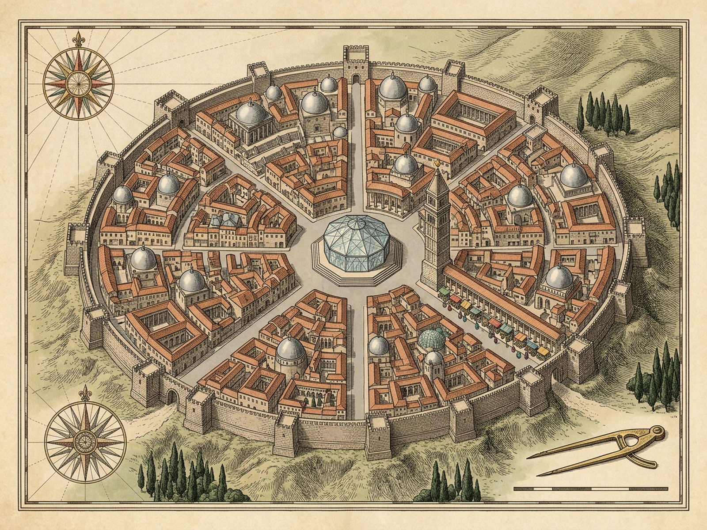
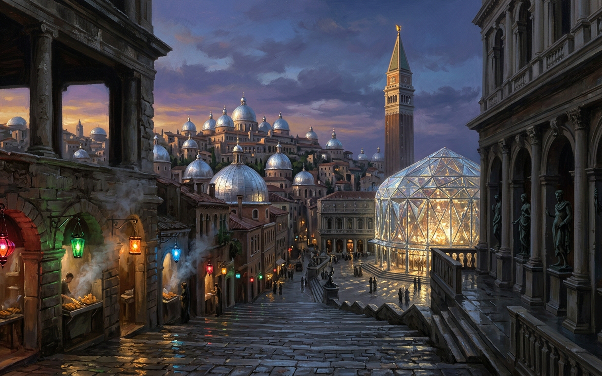

Chapter I · Cities & Memory 1DIOMIRASixty Silver Cupolas · Plumbum Perspective · Equinox Dusk AstrolabeMorning Crow · Alt +0.72Drag sky to lower sun · Click any monumentDusk-Chronometer · Solar Altitude+0.72 · Morning+1.00 Crow+0.08 Horizon-0.25 EveningSilver Domes60 CupolasStall Lamps0 / 12 UnlitEnvy Double0% DormantDiurnal Catalogue · Familiar Splendor
All these beauties—sixty silver domes, bronze statues of all the gods, streets paved with lead, a crystal theater, a golden cock that crows each morning on a tower—the traveler already knows, having seen them also in other cities.
By day, every monument belongs to comparative memory—cold, burnished, interchangeable. Lower the sun past +0.08 in September when the days grow shorter.
Stone V · Golden Cock on the Campanile
An articulated gilded weathercock crowning the tall campanile that fans its tail plumes and crows brazenly each morning—a marvel already familiar from other cities.
Keys: [←/→] Sun · [Space] Enact · [1–7] Stones · [M] Month · [O] “ooh!” · [P] Plates
Archival Plates of Diomira · Copperplate Plan & Equinox Vista

Ichnographia Diomirae (map.png · 1600×1200) — Copperplate survey plate in press with the Royal Cartographic Guild.
Plate I · Cartographic Survey (map.png, 1600×1200) — Sixty terraced silver cupolas, Pantheon colonnades, plumbum arterial perspective, crystal theater rotunda, campanile of the golden cock, and synchronous September food-stall circuit (Δt = 0 ms).

Vespera Septembris (image.png · 1600×1000) — Equinox architectural painting in press with the Royal Limner Guild.
Plate II · Equinox Twilight Vista (image.png, 1600×1000) — Shortening September evening when multicolored lamps light all at once at food-stall doors and from a terrace a woman’s voice cries “ooh!”.